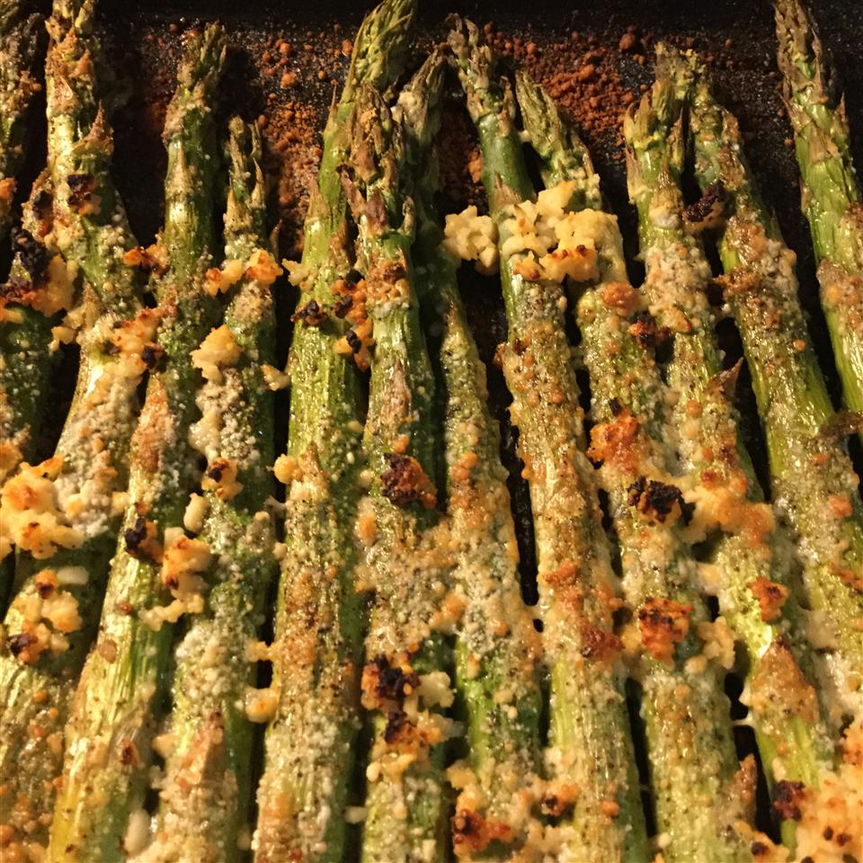

Oven-Roasted Asparagus

Description
Salty and savory, the roasting method kills the natural bitterness of asparagus.
Try it next to grilled fish or lamb.
Ingedients
- 1 bunch thin asparagus spears, trimmed
- 3 tablespoons olive oil
- 1 ½ tablespoons grated Parmesan cheese (Optional)
- 1 clove garlic, minced (Optional)
- 1 teaspoon sea salt
- ½ teaspoon ground black pepper
- 1 tablespoon lemon juice (Optional)
Steps
- Preheat an oven to 425 degrees F (220 degrees C).
- Place the asparagus into a mixing bowl, and drizzle with the olive oil. Toss to coat the spears, then sprinkle with Parmesan cheese, garlic, salt, and pepper. Arrange the asparagus onto a baking sheet in a single layer.
- Bake in the preheated oven until just tender, 12 to 15 minutes depending on thickness. Sprinkle with lemon juice just before serving.